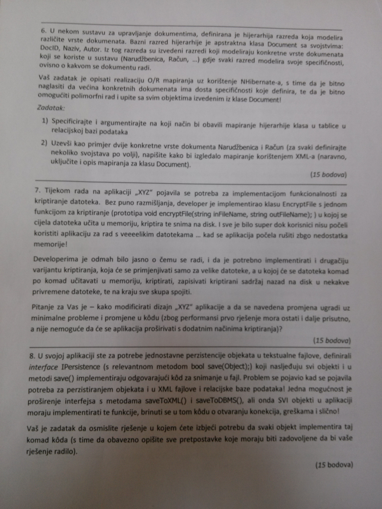

Maglica jesi uspio rjesit to?
Burek sa sirom nop
Maglica ja sam ovako radila i dobila bodove, sam prouci valjda na prezama kada se koja koristi
https://www.javatpoint.com/table-per-subclass https://www.javatpoint.com/hibernate-table-per-hierarchy-example-using-xml-file https://www.javatpoint.com/table-per-concrete-class
Jel zna tko kak izgleda usmeni iz ovoga?
Ima li netko rješenja zadataka za vježbu sa ferweba?
Ima li netko info je li se bodovi s projekta prenose na sljedeću godinu?
Jel u profesor u ovom gore zadatku pod “Autor” misli na instancu razreda Autor ili obican string? Ako misli na razred Autor, kako se to radi u nhibernate mappingu?
ugl taj zadatak se rjesava ovako: https://www.javatpoint.com/table-per-subclass ali tu se koriste samo primitivni tipovi u atributima
brbrbr I jel mi uopce radimo ove godine taj XML mapping, vidim da je u prezentacijama naglasak na fluentu
Zna netko ovaj možda?
Zabe vidi ovo za razmatranja ovog problema, takodjer imas jedno predlozeno rjesenje na github materijalima pod /vjezba/rjesenja nekih zadataka
Jel itko rješavao neke od zadataka iz ovog završnog da podjeli rješenja? 